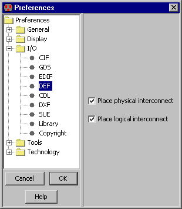

<!-- NEED 4in -->

<!-- HEADER 7-3-5: DEF Control -->

<!-- COMMAND File/Import/DEF (Design Exchange Format)... -->
<!-- PREFERENCE I/O/DEF -->

<TABLE><TR><TD><CENTER></CENTER></TD><TD>
DEF (Design Exchange Format) - формат обмена информацией между САПР.
Он часто совмещается с форматом LEF (Library Exchange Format).
Прочая информация находится в разделах
<A HREF="chap03-09-02.html#chap03-09-02">3-9-2</A> and
<A HREF="chap03-09-03.html#chap03-09-03">3-9-3</A>.
Опции DEF управляются с панели "DEF" (в меню <B>File / Preferences...</B>, раздел "I/O", панель "DEF").
<P>
Там можно установить, следует ли работать с логической и/или физической информацией.
</TD></TR></TABLE>

<!-- TRAILER -->
